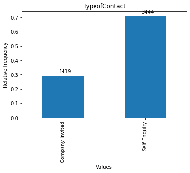

“Visit with us” is planning to launch a new product i.e. Wellness Tourism Package. Wellness Tourism is defined as Travel that allows the traveler to maintain, enhance or kick-start a healthy lifestyle, and support or increase one’s sense of well-being. The company wants to harness the available data of existing and potential customers to target the right customers. In this notebook, we analyze the customers’ data and information to provide recommendations to the Policy Maker and build a model to predict the potential customer who is going to purchase the newly introduced travel package. The model will be built to make predictions before a customer is contacted.
Objective
To predict which customer is more likely to purchase the newly introduced travel package.
2 Data Dictionary
Customer details:
CustomerID: Unique customer ID
ProdTaken: Whether the customer has purchased a package or not (0: No, 1: Yes)
Age: Age of customer
TypeofContact: How customer was contacted (Company Invited or Self Inquiry)
CityTier: City tier depends on the development of a city, population, facilities, and living standards. The categories are ordered i.e. Tier 1 > Tier 2 > Tier 3. It’s the city the customer lives in.
Occupation: Occupation of customer
Gender: Gender of customer
NumberOfPersonVisiting: Total number of persons planning to take the trip with the customer
PreferredPropertyStar: Preferred hotel property rating by customer
MaritalStatus: Marital status of customer
NumberOfTrips: Average number of trips in a year by customer
Passport: The customer has a passport or not (0: No, 1: Yes)
OwnCar: Whether the customers own a car or not (0: No, 1: Yes)
NumberOfChildrenVisiting: Total number of children with age less than 5 planning to take the trip with the customer
Designation: Designation of the customer in the current organization
MonthlyIncome: Gross monthly income of the customer
ProductPitched: Product pitched by the salesperson
NumberOfFollowups: Total number of follow-ups has been done by the salesperson after the sales pitch
DurationOfPitch: Duration of the pitch by a salesperson to the customer
3 Environment setting
In this section liberies and data are loaded into memory.
A sample view of the dataset is shown to have a sense what information it contains.
Code
# Loading librariesimport numpy as npimport matplotlib.pyplot as plt # Basic plotting functionsimport pandas as pd # Dataframe manipulationimport seaborn as sns # Statistical plottingfrom sklearn.model_selection\import train_test_split, GridSearchCVfrom sklearn.metrics\import confusion_matrix, make_scorer, recall_scorefrom sklearn.ensemble\import BaggingClassifier, RandomForestClassifier,\ AdaBoostClassifier, GradientBoostingClassifierfrom sklearn.linear_model import LogisticRegressionfrom sklearn.tree import DecisionTreeClassifierfrom xgboost import XGBClassifierSEED =1# Default Random State# Loading datasetdata = pd.read_excel("Tourism.xlsx", sheet_name="Tourism")# A random sampledata.sample(10, random_state=SEED)
CustomerID
ProdTaken
Age
TypeofContact
CityTier
DurationOfPitch
Occupation
Gender
NumberOfPersonVisiting
NumberOfFollowups
ProductPitched
PreferredPropertyStar
MaritalStatus
NumberOfTrips
Passport
PitchSatisfactionScore
OwnCar
NumberOfChildrenVisiting
Designation
MonthlyIncome
3015
203015
0
27.0
Company Invited
1
7.0
Salaried
Female
4
6.0
Basic
3.0
Married
5.0
0
4
1
3.0
Executive
23042.0
1242
201242
0
40.0
Self Enquiry
3
13.0
Small Business
Male
2
3.0
King
4.0
Single
2.0
0
4
1
NaN
VP
34833.0
3073
203073
0
29.0
Self Enquiry
2
15.0
Small Business
Male
4
5.0
Basic
3.0
Married
3.0
0
2
0
2.0
Executive
23614.0
804
200804
0
48.0
Company Invited
1
6.0
Small Business
Male
2
1.0
Super Deluxe
3.0
Single
3.0
0
2
0
0.0
AVP
31885.0
3339
203339
0
32.0
Self Enquiry
1
18.0
Small Business
Male
4
4.0
Deluxe
5.0
Divorced
3.0
1
2
0
3.0
Manager
25511.0
3080
203080
1
36.0
Company Invited
1
32.0
Salaried
Female
4
4.0
Basic
4.0
Married
3.0
1
3
0
1.0
Executive
20700.0
2851
202851
0
46.0
Self Enquiry
1
17.0
Salaried
Male
4
4.0
Basic
3.0
Divorced
5.0
0
5
1
1.0
Executive
21332.0
2883
202883
1
32.0
Company Invited
1
27.0
Salaried
Male
4
4.0
Standard
3.0
Divorced
5.0
0
3
1
1.0
Senior Manager
28502.0
1676
201676
0
22.0
Self Enquiry
1
11.0
Salaried
Male
2
1.0
Basic
4.0
Married
2.0
1
4
1
0.0
Executive
17328.0
1140
201140
0
44.0
Self Enquiry
1
13.0
Small Business
Female
2
3.0
King
3.0
Married
1.0
1
4
1
1.0
VP
34049.0
4 Exploratory data analysis I
In this section, a first take of exploratory data analysis is made. It focus on univariate analysis to know what each feature is representating and how is distributed.
4.1 Setting for the exploratory analysis
Some functions to support the univariate analysis are defined:
showFreqValues: to analize categorical and discrete values
missedValues: to show the percentage of missed values in a feature
showContinuousFreq: to analize continuous values
Code
def showFreqValues(data, feature):""" To visualizing distribution for discrete or categorical features """ counts = data[feature].value_counts().sort_index() sum_counts = counts.sum() rel_counts = counts / sum_counts ax = rel_counts.plot(kind='bar', title=feature, ylabel="Relative frequency", xlabel="Values")for i, v inenumerate(counts): ax.text(i -0.05, v / sum_counts +0.02, str(v))# plt.ylim(0.0, 1.0) plt.show() missedValues(data, feature)# return countsdef missedValues(data, feature):""" To compute the proportion of missed values """ p = data[feature].isna().sum() /len(data)print("Percentage of missed values for {0:}: {1:.2%}".format(feature, p))return pdef showContinuousFreq(data, feature):""" To visualize the distribution of a continuous numerical feature """ fig, ax = plt.subplots(nrows=2) sns.boxplot(data=data, x=feature, ax=ax[0]) sns.histplot(data=data, x=feature, ax=ax[1]) ax[0].set_title(feature) plt.show()print(data[feature].describe(), "\n") missedValues(data, feature)
4.2 Dataset characteristics
In this section, global characteristics of the dataset are retrieved.
Code
## Dataset dimensionsprint("Dataset dimensions:")print(" Number of observations: ", data.shape[0])print(" Number of features : ", data.shape[1])
Dataset dimensions:
Number of observations: 4888
Number of features : 20
Code
## Looking for duplicatesprint("Number of duplicated records: ", data.duplicated().sum() /2)
Number of duplicated records: 0.0
Code
# Checking the feature namesprint("Feature names:")data.columns
For each feature, a visualization about the data distribution is shown and some comments are included.
Code
counts = showFreqValues(data, "ProdTaken")
Percentage of missed values for ProdTaken: 0.00%
ProdTaken is the target feature
1 represents that the customer has purchased a package
Around 20 % of customers have taken a package
This feature has not missed values
Code
showContinuousFreq(data, 'Age')
count 4662.000000
mean 37.622265
std 9.316387
min 18.000000
25% 31.000000
50% 36.000000
75% 44.000000
max 61.000000
Name: Age, dtype: float64
Percentage of missed values for Age: 4.62%
Age has a centered distribution.
It ranges from 18 to 61 years old, with a median of 37 years old
It has 4.62 % of missed values with can be attributed using the median
Code
showFreqValues(data, 'TypeofContact')

Percentage of missed values for TypeofContact: 0.51%
TypeofContact has around 70 % of customer by self enquiry and around 30 % invited by the company
This feature has 0.51 % of missed values
Missed values can be attributed randomly using the mode
Code
showFreqValues(data, "CityTier")
Percentage of missed values for CityTier: 0.00%
The most of the customers live in Tier 1 (around 65%)
CityTier has not missed values
Code
showFreqValues(data, "Occupation")
Percentage of missed values for Occupation: 0.00%
The most of customers are salaried and small business owners (around 90%)
Occupation has not missed values
Code
showFreqValues(data, "Gender")
Percentage of missed values for Gender: 0.00%
The most of the customers are male (around 60%)
The are observations with female gender that are wrong coded; this should be fixed
Code
showFreqValues(data, "NumberOfPersonVisiting")
Percentage of missed values for NumberOfPersonVisiting: 0.00%
The group size that can take the trip is mostly of 3 person (around 50%)
NumberOfPersonVisiting has not missed values
Code
showFreqValues(data, "PreferredPropertyStar")
Percentage of missed values for PreferredPropertyStar: 0.53%
Around 60% of customers prefered a 3 star hotel
PreferredPropertyStar has 0.53% missed values
Missed values can be attributed using the mode
Code
showFreqValues(data, "MaritalStatus")
Percentage of missed values for MaritalStatus: 0.00%
Around 50% of customers are married
MaritalStatus feature has not missed values
Code
showContinuousFreq(data, "NumberOfTrips")
count 4748.000000
mean 3.236521
std 1.849019
min 1.000000
25% 2.000000
50% 3.000000
75% 4.000000
max 22.000000
Name: NumberOfTrips, dtype: float64
Percentage of missed values for NumberOfTrips: 2.86%
The most of customers take between 2 and 3 trips a year (above 50%)
Customers with more than 8 trips can be considered outliers
NumberOfTrips has 2.86% of missed values
Missed values can be attributed with the median
Code
showFreqValues(data, "Passport")
Percentage of missed values for Passport: 0.00%
Around 70% of customers have passport
Passport feature does not have missed values
Code
showFreqValues(data, "OwnCar")
Percentage of missed values for OwnCar: 0.00%
The most of the customers own a car (above 60%)
OwnCar feature has not missed values
Code
showFreqValues(data, "NumberOfChildrenVisiting")
Percentage of missed values for NumberOfChildrenVisiting: 1.35%
The most of customers has 1 children visiting (above 40%)
NumberOfChildrenVisiting feature has 1.35% of missed values
Missed values can be attributed using the median
Code
showFreqValues(data, "Designation")
Percentage of missed values for Designation: 0.00%
Above 70% of customer are executives and managers
Designation feature has not missed values
Code
showContinuousFreq(data, "MonthlyIncome")
count 4655.000000
mean 23619.853491
std 5380.698361
min 1000.000000
25% 20346.000000
50% 22347.000000
75% 25571.000000
max 98678.000000
Name: MonthlyIncome, dtype: float64
Percentage of missed values for MonthlyIncome: 4.77%
Around 50% of customers has income between 20.3 USD thousand and 25.5 USD thousand
MonthlyIncome feature has 4.77% of missed values
Missed values can be attributed using the median
Code
showFreqValues(data, 'PitchSatisfactionScore')
Percentage of missed values for PitchSatisfactionScore: 0.00%
The most of the customers assigned 3 as the pitch satisfaction score
PitchSatisfactionScore feature has not missed values
Code
showFreqValues(data, 'ProductPitched')
Percentage of missed values for ProductPitched: 0.00%
Above 35% of customers was pitched for the basic product; the same for the deluxe product
ProductPitched feature has not missed values
Code
showFreqValues(data, 'NumberOfFollowups')
Percentage of missed values for NumberOfFollowups: 0.92%
The most of the customers requires up to 4 follow ups (above 40%)
NumberOfFollowups has 0.92% of missed values
Missed values can be attributed using the median
Code
showContinuousFreq(data, 'DurationOfPitch')
count 4637.000000
mean 15.490835
std 8.519643
min 5.000000
25% 9.000000
50% 13.000000
75% 20.000000
max 127.000000
Name: DurationOfPitch, dtype: float64
Percentage of missed values for DurationOfPitch: 5.14%
It is assumed that duration of pitch is measured in minutes
Around 50% of customers got a pitch between 9 and 20 minutes
There are long pitch duration, like a maximum of 127 minutes
DurationOfPitch has 5.14% of missed values
Missed values can be attributed using the median
Comments from the univariate analysis:
The dataset has 4888 observations with 20 features, without duplicated observations
The most of the customers:
live in Tier 1 sectors
are salaried or small business owners
are executives or managers (above 70%)
own a car (above 60%)
males (above 60%) and married (above 45%)
have passport (above 70%)
three person in their visiting group, with one children
prefer a three star hotel
have taken between 2 and 3 trips a year (above 50%)
Age customers ranges from 18 to 61 years old, with a median of 37 years old
Above 50% of customers have an income between 20.3 y 25.5 USD thounsand
Around 70% of customers have been contacted by self inquiry
The most of the customers assigned 3 as the pitch satisfaction score
Above 35% of customers was pitched for the basic product; the same percentage for the deluxe product
The most of the customers requires up to 4 follow ups (above 40%)
Around 50% of customers got a pitch between 9 and 20 minutes
Around 20 % of customers have taken a package
5 Data pre-processing I
In this section some transformation on data are made, specifically:
CustomerID is an identification feature; it will be used as the dataset index
Age, NumberOfTrips, NumberOfChildrenVisiting, MonthlyIncome, NumberOfFollowups, and PreferredPropertyStar, and DurationOfPitch missed values will be attributed using the median
TypeofContact missed values will be attributed using the mode
In the Gender feature, Fe Male value should be replaced by Female
Code
# Using CustomerID as indexdata.set_index('CustomerID', inplace=True)# Fixing gender valuesdata['Gender'].replace('Fe Male', 'Female', inplace=True)data['Gender'].value_counts()# Filling missed values with mediancols = ["Age", "NumberOfTrips", "NumberOfChildrenVisiting", "MonthlyIncome", "NumberOfFollowups", "DurationOfPitch","PreferredPropertyStar"]data[cols] = data[cols].fillna(data[cols].median())# Filling missed values with modecol ="TypeofContact"data[col] = data[col].fillna(data[col].mode()[0])# Checking if there are still missed valuesprint("Missed data: ")data.isna().sum()
H(T, F): Entropy after partitioning the target by a feature F
For continuous features, correlation is used as a measure of feature importance.
Code
# Setting the target featuretarget ="ProdTaken"def entropy(values):""" To compute the entropy of a vector """ p = values.value_counts() /len(values) accum =0for el in p: accum -= el * np.log(el)return accumdef gain(data, feature, target):""" To compute the information gain based on entropy after a class has been partitioned by a feature """ e = entropy(data[target]) n =len(data[feature])for value in data[feature].unique(): rs = data[data[feature] == value][target] prop =len(rs) / n e -= prop * entropy(rs)return e# Categorical and discrete featuresnoncontinuos = [col for col in data.columns if data[col].dtype in ['int64', 'object'] and col != target]# Continuous featruescontinuous =list(set(data.columns).difference(set(noncontinuos)))
Information gain for categorical and discrete value features
Code
gains = pd.DataFrame( [ {'feature': col, 'gain': gain(data, col, target)} for col in noncontinuos ])\ .set_index('feature')\ .sort_values(by='gain', ascending=False)gains.plot( kind='bar', ylabel="Information Gain", title=f"Information Gains related to {target}")
<AxesSubplot:title={'center':'Information Gains related to ProdTaken'}, xlabel='feature', ylabel='Information Gain'>
Correlations for continuous value features
Code
corrs = data[continuous]\ .corr()[target]\ .abs()\ .drop(target)\ .sort_values(ascending=False)corrs.plot( kind='bar', ylabel="Absolute correlation", title=f"Correlations related to {target}")
<AxesSubplot:title={'center':'Correlations related to ProdTaken'}, ylabel='Absolute correlation'>
6.2 Exploring the most preliminary important features
Code
features = ["Passport", "ProductPitched", "Designation", "MaritalStatus"]n =len(features)fig, ax = plt.subplots(nrows=n, figsize=(6, n *3))for i, feature inenumerate(features): sns.countplot(data=data, x=feature, hue="ProdTaken", ax=ax[i])
For categorical and discrete value features:
Customers that have passport are more proned to take the product
Customers that are executives are more proned to take the product
Customers that get the basic product pitched are more proned to take it
Code
features = ["Age", "MonthlyIncome", "NumberOfFollowups"]n =len(features)fig, ax = plt.subplots(nrows=n, figsize=(6, n *3))for i, feature inenumerate(features): sns.scatterplot(data=data, x=feature, y="ProdTaken", ax=ax[i])
For continuous value features, it doesn’t seen to be a noted partition in data.
7 Evaluation setting
In this section criteria to evaluate the prediction models are defined.
For each model, a confussion matrix will be computed, indicaticating the perfomance for true positive (TP), false positive (FP), true negative (TN), and false negative (FN) results.
For each model, based in its confussion matrix computed on the test dataset, indicators of accuracy, precision, recall, specificity will be generated.
Due the analysis function is to support the taking of travel packages, false negatives have more cost that false possives. The company can loss income if the false negatives are not reached.
Based on the previous point, recall indicator will prioritized as measument of model goodness
A class is defined to store metrics for the different models that will be generated
Code
def computeMetrics(y_test, y_predicted):""" Compute performance indicators for predictive classification models """ cf = confusion_matrix(y_test, y_predicted, labels=[1, 0]) TP = cf[0, 0] FP = cf[0, 1] FN = cf[1, 0] TN = cf[1, 1] precission = TP / (TP + FP) recall = TP / (TP + FN) f1 =2* precission * recall / (precission + recall)return {'cf': cf,'TP': TP,'FP': FP,'FN': FN,'TN': TN,'accuracy': (TP + TN) / cf.sum(),'precission': precission,'recall': recall,'specifity': TN / (TN + FP),'f1': f1 }def showMetrics(metrics):""" Plot the most relevant metrics for a predictive classification model """ indLabels = ['accuracy', 'precission', 'recall', 'specifity', 'f1'] cf = metrics['cf'] fig, ax = plt.subplots(ncols=2, nrows=1, figsize=(16, 6)) annot = [['{0:0.0f}\n'.format(value) +'{0:0.2%}'.format(value / cf.sum()) for value in row] for row in cf] sns.heatmap(cf, annot=annot, fmt='', cmap='Spectral', vmin=0, cbar=False, ax=ax[0]) ax[0].set_ylabel('Observed') ax[0].set_xlabel('Prediced') ind = {label: metrics[label] for label in indLabels} ax[1].bar(ind.keys(), ind.values()) ax[1].set_xlabel('Classification Metrics')for label in indLabels:print('{0:10}: {1:0.3}'.format(label, metrics[label]))def featureImportance(model, colnames):""" To visualize the importante of features given by a model """ importances = model.feature_importances_ indices = np.argsort(importances) plt.figure(figsize=(12,12)) plt.title('Feature Importances') plt.barh(range(len(indices)), importances[indices], align='center') plt.yticks(range(len(indices)), [colnames[i] for i in indices]) plt.xlabel('Relative Importance') plt.show()# A array is defined to store the different models generatedclass MetricsComparator:""" A class to store and compare different models """ metrics_collection = []def__init__(self):self.metrics_collection = []def append(self, code, model, metrics, label): metrics['code'] = code metrics['label'] = label metrics['model'] = modelself.metrics_collection.append(metrics.copy())def compare(self, modelList=None):""" Compare metrics for the collection of models """ coll =self.metrics_collection.copy()if modelList: coll = [m for m inself.metrics_collection if m['code'] in modelList] indLabels = ['accuracy', 'precission', 'recall', 'specifity', 'f1'] comp = pd.DataFrame(coll)[indLabels + ['label']] comp.set_index('label', inplace=True) comp.plot(kind='bar', figsize=(16, 8))return comp# Class instancemc = MetricsComparator()
8 Data pre-processing II
This is the continuation of the data pre-processing task. Here:
Categorical data is convert to dummy features
Dataset is divided in X features and the target feature
# Generating X and y datasetstarget ="ProdTaken"X = df.drop(columns=target)y = df[target]# Spliting train and test samplesX_train, X_test, y_train, y_test = train_test_split( X, y, test_size=0.3, random_state=SEED, stratify=y)
Code
print("X train sample dimensions: ", X_train.shape)print("X test sample dimensions : ", X_test.shape)print()print("y train class proportions:\n{}\n".format(y_train.value_counts() /len(y_train)))print("y test class proportions :\n{}\n".format(y_train.value_counts() /len(y_train)))
X train sample dimensions: (3421, 28)
X test sample dimensions : (1467, 28)
y train class proportions:
0 0.811751
1 0.188249
Name: ProdTaken, dtype: float64
y test class proportions :
0 0.811751
1 0.188249
Name: ProdTaken, dtype: float64
9 Modeling: basic classifiers
To have a starting reference, in this section two basic models are genereted:
Decission Tree Classifier
Logistic Regression Classifier
Both of then are processed with default parameters.
These models will be used to compare performance for bagging and boosting models.
The logistic regression model has a better performance on the test sample, related to the decision tree classifier, with a recall score of 0.757. Based on that, this basic model will be used as performance comparison against bagging and boosting models.
10 Modelling: Bagging
In this section bagging algorithms with default parameters are used to try to improve the prediction performance on data.
Both, Bagging and Random Forest classifiers shown an improved perfomance related to the basic models, i.e. Logistic Regression, when they are compared based on the recall score computed on the test sample
Random Forest Classifier has a better performance, with a recall score of 0.92
According to the Random Forest Classifier, the most important features are Monthly Income, Age, and Duration of Pitch
11 Modelling: Bagging with Hyper-parameter tunning
In this section, Bagging and Random Forest classifiers are optimized with hyper-parameter tunning to check if a improvement can be obtained.
11.1 Bagging Classifier
Base estimator is tried between Decision Tree and Logistic Regression classifiers
Number of estimators are evaluated between 10 and 100
Maximum of samples is evaluated between 0.7 y 1.0
Maximum of features is evaluated between 0.7 and 1.0
The hyper-parameter tunned Bagging model has better perfomance than the Bagging with default parameters, related to the recall scorer on the test sample
Comparing Random Forest Classifiers:
Code
mc.compare(["RFC", "HRF"])
accuracy
precission
recall
specifity
f1
label
Random Forest
0.916155
0.590580
0.942197
0.912674
0.726058
Hyp-Tunned Random Forest
0.928425
0.663043
0.938462
0.926887
0.777070
In this case, the Random Forest Classifier with defalt parameters has better perfomance than the hyper-parameter tunned.
The most important features are the same for both models
Comparison of hypter-parameter tunned bagging algorithms:
Code
mc.compare(["HBC", "HRF"])
accuracy
precission
recall
specifity
f1
label
Hyp-Tunned Bagging Classifier
0.927744
0.670290
0.925000
0.928177
0.777311
Hyp-Tunned Random Forest
0.928425
0.663043
0.938462
0.926887
0.777070
They have almost similar performance, with little advantage for the Random Forest Classifier.
Conclusion:
Hyper-parameter tuned bagging models, with the range of parameters used did not improve the performance related to the Randon Forest Classifier with default parameters.
The worse performance of the hyper-parameter tunned algorithms might be related with the choosing of range parameters for tunning
The most important features are Montly Income, Age, and Duration of Pitch.
12 Modelling: Boosting
In this section Boosting algorithms are evaluated to try to improve the prediction performance.
AdaBoost Classifier
Gradient Boosting Classifier
Gradient Boosting with AdaBoost as initial estimator
In the category of boosting algorithms, related to the recall score on the test sample, the eXtreme Gradient Boosting algorithm has the best performance
The most important features are different amonth these models. For example, for the eXtrema Gradient Boosting model, the most important features are Designation as Executive, having a passport, and being single.
However, the bagging algorithms with default parameters have better performance than the boosting algorithms with default parameters, as it is shown in the below comparison
Code
mc.compare(["RFC", "XGB"])
accuracy
precission
recall
specifity
f1
label
Random Forest
0.916155
0.590580
0.942197
0.912674
0.726058
XGBoost
0.926380
0.692029
0.892523
0.932163
0.779592
13 Modelling: Boosting with Hyper-parameter tunning
In this section the presented boosting algorithms are used to generate more models with hyper-parameter tunning.
With hyper-parameter tunning, the best boosting algorithm with recall score on the test dataset was the Gradient Boosting Classifier
Maybe the worse performance is due the selection of ranges for parameters evaluated
Comparing all methods, Random Forest Classifier with default parameters has the better performance in this analysis, as is shown in the below visualization
Code
mc.compare(["RFC", "HRF", "XGB", "HGB"])
accuracy
precission
recall
specifity
f1
label
Random Forest
0.916155
0.590580
0.942197
0.912674
0.726058
Hyp-Tunned Random Forest
0.928425
0.663043
0.938462
0.926887
0.777070
XGBoost
0.926380
0.692029
0.892523
0.932163
0.779592
Hyp-Tunned GradientBoost
0.936605
0.768116
0.879668
0.947798
0.820116
14 Actionable Insights & Recommendations
Results for the Random Forest Classifier are shown again.
Code
rf = [m for m in mc.metrics_collection if m['code'] =="RFC"][0]model = rf["model"]y_hat = model.predict(X_test)metrics = computeMetrics(y_test, y_hat)showMetrics(metrics)featureImportance(model, X_train.columns)